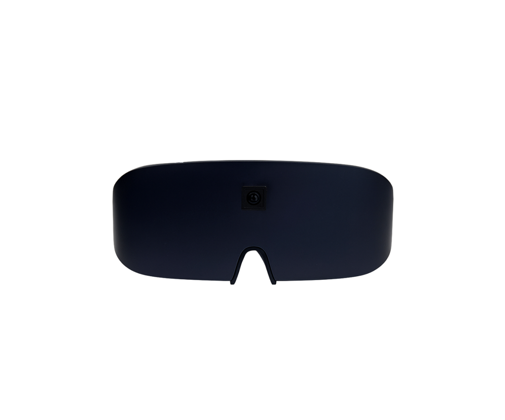

Smart Glasses — это компактный гаджет для людей с нарушениями зрения, объединяющий технологию оптического распознавания символов (OCR), машинное обучение и голосовое управление. Встроенная камера высокого разрешения считывает печатный текст, система мгновенно озвучивает его через динамики или наушники с поддержкой множества языков и шрифтов. Алгоритмы машинного обучения обеспечивают высокую точность распознавания, автономная работа от встроенного аккумулятора гарантирует мобильность, а голосовое управление позволяет настраивать скорость и громкость воспроизведения без использования рук. Устройство открывает доступ к образовательным материалам, обеспечивает независимость в рабочей среде для чтения документов и отчетов, поддерживает чтение книг, газет и журналов.
В 2021 году Smart Glasses была успешно продемонстрирована президенту Азербайджанской Республики во время открытия шестого филиала ASAN xidmət, получив высокую оценку как инновационное решение для социальной интеграции и подчеркнув важность инклюзивных технологий в государственных сервисах. Регулярные обновления программного обеспечения расширяют функциональность и улучшают точность распознавания, планируется интеграция с системами умного города для расширения навигационных возможностей. Smart Glasses представляют революционный шаг в области вспомогательных технологий, способствуя повышению качества жизни людей с нарушениями зрения и созданию более инклюзивного общества.
